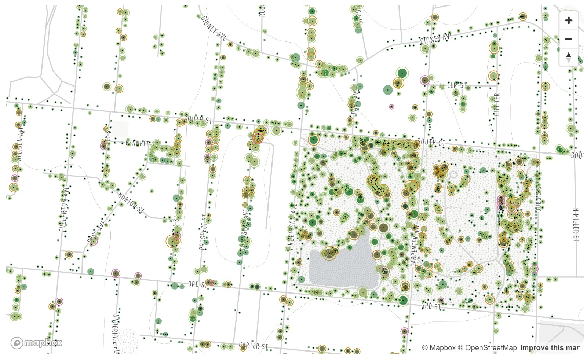

Tree clustering
Exploring the map shows that there is healthy proliferation of trees in and around Downing Park where contamination is minimal.
The health of Newburgh’s trees is jeopardised by contamination that is focused in various sites across the city. Explore this representation that shows the impact that the contamination has had on tree assemblages, their risk of failing and the consequences of their failure.
WELCOME!!! Here is a tool to explore Newburgh's tree inventory in relation to contaminated sites.
We are seeking to find if there is a correlation between contamination levels and the condition of trees in the city of Newburgh.
The health of Newburgh’s trees are jeopardised by contaminated sites dispersed across the city.
Zoom in to the map to explore the impact the contamination has caused tree assemblies to deteriorate and pose risks to their surroundings.
Newburgh is currently a food desert and has difficulties in providing affordable or good-quality fresh food to its residents. The source of the issue comes from the pervasive contamination of past industrial processes and land misuse.
Exploring the map shows that there is healthy proliferation of trees in and around Downing Park where contamination is minimal.
In contrast to this, right by the two contaminated sites 7-11 Johnes Street and 4 Renwick Street that were formerly a natural gas regulator station, propane peaking facility and drycleaning facility, it is evident that the trees in close proximity are in high risk of failing and in poor condition.